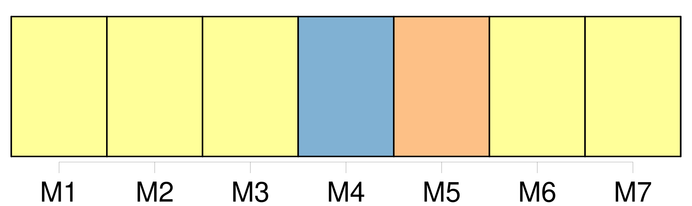
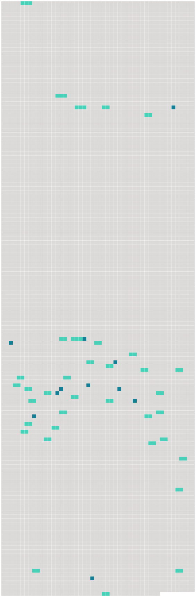

Longueur nb maillons : 47 mentions |
  |
De l'adoption et de [la tutelle officieuse] [53 phrases]
De [la tutelle officieuse] [5 phrases]
Le juge de paix du domicile de l'enfant dressera procès verbal des demandes et consentemens relatifs à [la tutelle officieuse] [1 phrases]
[Cette tutelle] ne pourra avoir lieu qu'au profit d'enfans âgés de moins de quinze ans.
[Elle] emportera avec soi sans préjudice de toutes stipulations particulières, l'obligation de nourrir le pupille, de l'élever de le mettre en état de gagner sa vie. [3 phrases]
Si le tuteur officieux, après cinq ans révolus depuis [la tutelle] , et dans la prévoyance de son décès avant la majorité du pupille, lui confère l'adoption par acte testamentaire, cette disposition sera valable, pourvu que le tuteur officieux ne laisse point d'enfans légitimes. [145 phrases] [La tutelle] est [une charge personnelle] [qui] ne passe point aux héritiers du tuteur.
Ceux -ci seront seulement responsables de la gestion de leur auteur ; et s'ils sont majeurs, ils seront tenus de [la] continuer jusqu'à la nomination d'un nouveau tuteur. [3 phrases] Dans [toute tutelle] il y aura un subrogé tuteur, nommé par le conseil de famille. [3 phrases]
S'il s'est ingéré dans la gestion avant d'avoir rempli cette formalité, le conseil de famille, convoqué soit sur la réquisition des parens, créanciers ou autres parties intéressées, soit d'office par le juge de paix, pourra, s'il y a eu dol de la part du tuteur, lui retirer [la tutelle] , sans préjudice des indemnités dues au mineur. [5 phrases]
Le subrogé tuteur ne remplacera pas de plein droit le tuteur, lorsque [la tutelle] deviendra vacante, ou qu' [elle] sera abandonnée par absence ; mais il devra, en ce cas, sous peine des dommages-intérêts qui pourraient en résulter pour le mineur, provoquer la nomination d'un nouveau tuteur. [1 phrases]
Les fonctions du subrogé tuteur cesseront à la même époque que [la tutelle] [4 phrases]
Des Causes qui dispensent de [la Tutelle] [1 phrases]
Sont dispensés de [la tutelle] , [1 phrases]
Sont également dispensés de [la tutelle] , les militaires en activité de service et tous autres citoyens qui remplissent, hors du territoire de la République, une mission du Gouvernement. [3 phrases]
Les citoyens de la qualité exprimée aux articles précédens, qui ont accepté [la tutelle] postérieurement aux fonctions, services ou missions qui en dispensent, ne seront plus admis à s' [en] faire décharger pour cette cause. [1 phrases]
Ceux, au contraire, à qui lesdites fonctions, services ou missions, auront été conférés postérieurement à l'acceptation et gestion d' [une tutelle] , pourront, s'ils ne veulent [la] conserver, faire convoquer, dans le mois, un conseil de famille pour [y] être procédé leur remplacement.
Si, à l'expiration de ces fonctions, services ou missions, le nouveau tuteur réclame sa décharge, ou que l'ancien redemande [la tutelle] , [elle] pourra lui être rendue par le conseil de famille. [1 phrases]
Tout citoyen non parent ni allié ne peut être forcé d'accepter [la tutelle] , que dans le cas où il n'existerait pas, dans la distance de quatre myriamètres, des parens ou alliés en état de gérer [la tutelle] [2 phrases]
Celui qui aura été nommé avant cet âge, pourra, à soixante-dix ans, se faire décharger de [la tutelle] [1 phrases]
Tout individu atteint d'une infirmité grave et dûment justifiée, est dispensé de [la tutelle]
Il pourra même s' [en] faire décharger, si cette infirmité est survenue depuis sa nomination. [8 phrases]
La survenance d'enfans pendant [la tutelle] ne pourra autoriser, à l'abdiquer. [1 phrases]
Si le tuteur nommé est présent à la délibération qui lui défère [la tutelle] il devra sur-le-champ et sous peine d'être déclaré non recevable dans toute réclamation ultérieure proposer [ses] excuses, sur lesquelles le conseil de famille délibérera. [1 phrases]
Si le tuteur nommé n'a pas assisté à la délibération qui lui a déféré [la tutelle] , il pourra faire convoquer le conseil de famille pour délibérer sur ses excuses.
Ses diligences à ce sujet devront avoir lieu dans le délai de trois jours, à partir de la notification qui lui aura été faite de sa nomination ; lequel délai sera augmenté d'un jour par trois myriamètres de distance du lieu de son domicile à celui de l'ouverture de [la tutelle] : passé ce délai, il sera non recevable. [3 phrases]
S'il parvient à se faire exempter de [la tutelle] , ceux qui auront rejeté l'excuse, pourront être condamnés aux frais de l'instance. [2 phrases]
De l'Incapacité, des Exclusions et Destitutions de [la Tutelle] [7 phrases] La condamnation à une peine afflictive ou infamante emporte de plein droit l'exclusion de [la tutelle] [2 phrases]
Sont aussi exclus de [la tutelle] , et même destituables, s'ils sont en exercice, [3 phrases]
Tout individu qui aura été exclu ou destitué d' [une tutelle] , ne pourra être membre d'un conseil de famille. [8 phrases]
Le tuteur exclu ou destitué peut lui -même, en ce cas, assigner le subrogé tuteur pour se faire déclarer maintenu en [la tutelle] [18 phrases]
Lors de l'entrée en exercice de [toute tutelle] , autre que celle des père et mère le conseil de famille réglera par aperçu, et selon l'importance des biens régis, la somme à laquelle pourra s'élever la dépense annuelle du mineur, ainsi que celle d'administration de ses biens. [40 phrases]
Des Comptes de [la Tutelle] [3 phrases]
Tout tuteur, autre que le père et la mère, peut être tenu, même durant [la tutelle] , de remettre au subrogé tuteur des états de situation de sa gestion, aux époques que le conseil de famille aurait jugé à propos de fixer, sans néanmoins que le tuteur puisse être astreint à en fournir plus d'un chaque année. [2 phrases] Le compte définitif de [tutelle] sera rendu aux dépens du mineur, lorsque aura atteint sa majorité ou obtenu son émancipation. [10 phrases] Toute action du mineur contre son tuteur, relativement aux faits de [la tutelle] , se prescrit par dix ans, à compter de la majorité. |
 |
La ressource peut être téléchargée sur la page Ortolang
Si vous avez des questions ou vous voyez des erreurs, merci d'envoyer un mail à silvia.federzoni89@gmail.com
Site développé par S. Federzoni (contact)